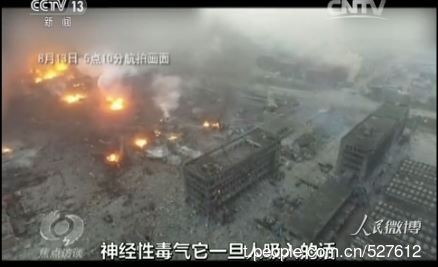
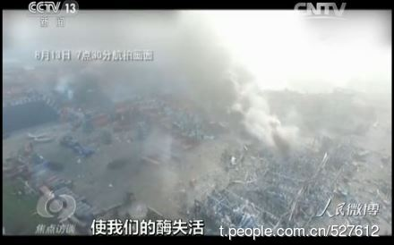
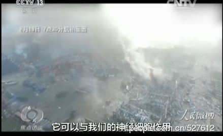
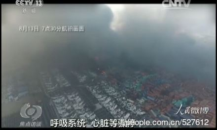

上一篇博文刚发过《每周转载》，所以今天就不再发《每周转载》了（俺尽量避免连着发，免得有读者抱怨俺——写原创博文不积极）。
今天这篇，继续抹黑党国——主要让大伙儿见识一下：天朝各级衙门是多么的低效和无能。然后在本文结尾，俺做一下简单的分析。
8月16日10时，召开了灾爆炸事故的“第6次新闻发布会”。此时距离事故发生，已经过去了80多个小时（超过3天）。
那天的记者提问环节，财新网记者提了一个“看似平淡实则尖锐”的问题——
负责回答记者提问的龚建生（天津党委宣传部副部长）竟然回答说：
额滴神啊！作为“中共建政以来最严重的爆炸案”，救灾工作已经进行到第4天，各级衙门竟然没有定出一个“救灾总指挥”。难道说，这么多参与救灾的部门，都是在各自为战？
龚建生的这个回答，立即在网上引起广泛的嘲讽和质疑。按理说朝廷方面应该以最快速度确定出“总指挥”的人选，以平息各方质疑。但实际上捏，一直拖到两天之后（8月18日）的“第8次新闻发布会”，大伙儿才知道谁是总指挥。
当时的情形是：救灾工作分秒必争，网上舆论一片哗然。如此紧急的情况下，朝廷方面居然还要花两天时间才公布总指挥的人选。咱天朝官僚系统的效率也太低下了吧？
面对这个姗姗来迟的“总指挥”，某网友讽刺道：
先来看如下报道，出自朝廷喉舌“人民网”：
《天津港爆炸点三公里内人员被要求紧急疏散 @ 人民网》 （2015年08月15日 13:04）
《“天津港事故发生地方圆两公里范围内群众撤离”为不实消息 @ 中新网》 （2015年08月15日 20:05）
人民微博在 2015-08-19 11:52 发了一条博文，链接在“这里”，原文如下：
【现场测出神经性毒气 天津环保局回应】据焦点访谈报道，在生化侦检队伍对#天津港爆炸事故#核心区空气监测时，除氰化钠，还发现了神经性毒气。专家称，“一旦人吸入，可与神经细胞作用，使酶失活，导致呼吸心脏等骤停进而致人死亡。”天津市环保局应急专家组组长包景岭称将和军方联系，看有什么物质。
（俺顺便再贴出视频截图如下）
   
就在上述博文贴出来不久，新华网发布了下面这篇，堪称“针锋相对的打脸”。
《专家：天津港爆炸核心区所谓“神经性毒气”之说属“重大误判” @ 新华网》 2015年08月19日 15:12:18
（以下是这篇报道的摘录，粗体是俺标注的）
你看，央视的“焦点访谈”被新华网狠狠打脸了——这也再次体现出朝廷宣传系统的混乱。
真理部老是指责个别网民造谣，那么朝廷喉舌这种自相矛盾的报道（至少有一方是错的）——这算不算“官方造谣”捏？
《新京报》在8月17日发了一篇《6场发布会的已知与未知》，俺摘录其中的几个统计数字如下（粗体是俺标注的）：
另有网民总结了官员回答记者提问的常用句型：“不知道、不清楚、不关我事、不予回答、我很忙”。
引申阅读：
《党国应对灾难的标准操作流程——以上海大火为例》
以前“二战史”有一个典故叫做“西线无战事”，如今天朝有一个类似的说法叫做“天津无新闻”。
（本文发出后，某热心读者指出，“西线无战事”是反映一战的影片，跟二战无关。其实捏，一战和二战都有“西线无战事”的典故。二战中是指“英法奉行的【绥靖主义】”）
此次大爆炸如此之严重，欧美各大媒体（电视、报刊、网站）都在最显著的位置报道了天津的大爆炸，有些媒体在显著位置持续报道超过一周。
再来看看天津本地的电视台——天津卫视至13日上午仍在播韩国偶像剧和动画片，丝毫不见事故的报道。
（以下是爆炸次日，天津卫视的节目时间表）
（以下是相关的媒体报道）
塘沽大爆炸，天津依然是座没有新闻的城市 @ 新浪新闻
世界關注天津爆炸案 天津電視台猛播韓劇 @ 聯合新聞網
补充说明：
有些读者可能认为：责任不在电视台，而在电视台的上级。
其实俺本文并没有说责任在电视台，不管责任在电视台、还是电视台的上级、还是上级的上级，都属于天朝官僚系统。本文的论点是：官僚系统的低效和无能。天津电视台的表现，让全世界看笑话，已经体现出这一点。
8月16日的第六次新闻发布会，北京军区参谋长史鲁泽少将一上来说了句：“很高兴和大家见面”。令在座的众人雷倒一片。
（由于时间有限，肯定还有一些奇葩的事情没被俺发现。欢迎大伙儿补充。）
虽说天朝的官僚系统一向效率不高、能力不强。但前些年的重大事故，各级衙门犯的低级错误，好像没这次多。
这里面当然有很多原因。俺单说其中一个原因——习呆呆的反腐。自从习呆呆上台并大力反腐之后，对官僚系统产生了两个影响：
1. 权斗
习呆呆的反腐是“选择性反腐”，最终目的是为了巩固自己权力。如此一来，必定会引发其他权贵集团的反抗。关于这方面，俺之前写过几篇博文，比如这篇：《党国喉舌反遭多次封杀，朝廷高层权斗日渐激烈》
顺便说一下：像习呆呆这种反腐，肯定无法根治腐败，具体分析可以看《分析“制度性腐败”——为啥天朝的贪官屡禁不止？》
2. 懒政
所谓的“懒政”，通俗地说就是“占着茅坑不拉屎”。在反腐的背景下，很多官员坚守这样一条原则——【多干多错，少干少错，不干不错】。所以他们就宁可不干事儿。就算是自己份内的事儿，他们也尽量推、尽量拖、尽量踢皮球。
关于“懒政”现象的普遍性，朝廷自己是承认的（不信你去 google 一下朝廷喉舌的网站）。
在上述这两种现象中，“权斗”主要牵涉到级别比较高的官员，而“懒政”主要影响级别比较低的官员。有这两个现象的存在，整个官僚系统的“效率和能力”必定会显著下降。
不光是这次的“天津大爆炸”体现出官僚系统的低效和无能。前不久的“救市”，同样是昏招频出。如今国家队救市已经救了一个多月，效果如何，大伙儿都看见了。
另外，如果你跟俺一样，也希望天朝发生政治变革；那么，对官僚系统的“低效和无能”，你应该感到高兴——各级衙门越是低效无能，推翻朝廷的胜算就越大 :)
对政治变革感兴趣的同学，可以去看俺写的《谈革命》系列博文。
俺博客上，和本文相关的帖子（需翻墙）：
《分析“制度性腐败”——为啥天朝的贪官屡禁不止？》
《党国应对灾难的标准操作流程——以上海大火为例》
《每周转载：关于盐城市响水县的化工大爆炸（相关报道和网友评论，多图）》
《每周转载：汇总中石化输油管爆炸事故（图片若干、评论若干）》
《谈革命》（系列）
《党国喉舌反遭多次封杀，朝廷高层权斗日渐激烈》
今天这篇，继续抹黑党国——主要让大伙儿见识一下：天朝各级衙门是多么的低效和无能。然后在本文结尾，俺做一下简单的分析。
★竟然【没有】“救援总指挥”
8月16日10时，召开了灾爆炸事故的“第6次新闻发布会”。此时距离事故发生，已经过去了80多个小时（超过3天）。
那天的记者提问环节，财新网记者提了一个“看似平淡实则尖锐”的问题——
此次爆炸事故救援总指挥是谁，如何组织指挥？
负责回答记者提问的龚建生（天津党委宣传部副部长）竟然回答说：
这个问题下来以后，我再尽快详细了解
额滴神啊！作为“中共建政以来最严重的爆炸案”，救灾工作已经进行到第4天，各级衙门竟然没有定出一个“救灾总指挥”。难道说，这么多参与救灾的部门，都是在各自为战？
龚建生的这个回答，立即在网上引起广泛的嘲讽和质疑。按理说朝廷方面应该以最快速度确定出“总指挥”的人选，以平息各方质疑。但实际上捏，一直拖到两天之后（8月18日）的“第8次新闻发布会”，大伙儿才知道谁是总指挥。
当时的情形是：救灾工作分秒必争，网上舆论一片哗然。如此紧急的情况下，朝廷方面居然还要花两天时间才公布总指挥的人选。咱天朝官僚系统的效率也太低下了吧？
面对这个姗姗来迟的“总指挥”，某网友讽刺道：
头七小时确定的救援总指挥，负责指挥救援；等到“头七”才确定的总指挥，负责指挥烧纸钱。
★到底有没有“紧急疏散”？——朝廷喉舌被朝廷喉舌辟谣
先来看如下报道，出自朝廷喉舌“人民网”：
《天津港爆炸点三公里内人员被要求紧急疏散 @ 人民网》 （2015年08月15日 13:04）
8月15日上午11时许，天津塘沽爆炸现场附近武警消息，要求距离爆炸核心区范围三公里内人员全部撤离。环保、交警等现场多个部门工作人员证实撤离消息属实。截至发稿，通往核心区域的东海路已被武警封死，相关人员正在陆续撤离现场。再来看另一条消息，出自“中国新闻网”（同样是朝廷喉舌）
《“天津港事故发生地方圆两公里范围内群众撤离”为不实消息 @ 中新网》 （2015年08月15日 20:05）
8月15日下午5时，天津市召开滨海爆炸事故第五场新闻发布会，天津市委宣传部副部长龚建生回应网上传播的“在天津港爆炸事故发生地方圆两公里范围内群众撤离”的消息时表示，经证实该情况为不实消息。列位看官，上述两条都来自朝廷喉舌的网站——同一天发布的新闻，自相矛盾啊。如此重大的事故，中央政府旗下新闻网站，报道却如此混乱。
★到底有没有“神经性毒气”？——朝廷喉舌被朝廷喉舌打脸
人民微博在 2015-08-19 11:52 发了一条博文，链接在“这里”，原文如下：
【现场测出神经性毒气 天津环保局回应】据焦点访谈报道，在生化侦检队伍对#天津港爆炸事故#核心区空气监测时，除氰化钠，还发现了神经性毒气。专家称，“一旦人吸入，可与神经细胞作用，使酶失活，导致呼吸心脏等骤停进而致人死亡。”天津市环保局应急专家组组长包景岭称将和军方联系，看有什么物质。
（俺顺便再贴出视频截图如下）
就在上述博文贴出来不久，新华网发布了下面这篇，堪称“针锋相对的打脸”。
《专家：天津港爆炸核心区所谓“神经性毒气”之说属“重大误判” @ 新华网》 2015年08月19日 15:12:18
（以下是这篇报道的摘录，粗体是俺标注的）
军事医学科学院专家、联合国禁止化学武器组织专家丁日高认同王永安的观点：“只要具备专业常识，就知道这绝不可能。”
同在现场执行任务的总参谋部防化指挥学院专家王宁也持同样观点：“我们看到这则报道时都很吃惊。”
“一般的测量仪器出现误报很常见。”王永安说，从电视来看，现场使用的仪器并非行业中认定的可以准确确定检测结果的“金标准”仪器。
军事医学科学院毒物药物研究所研究员聂志勇、全军中毒救治中心王汉斌主任医师同时介绍，到目前为止，专家组并没有听说有神经性毒剂中毒病例。王汉斌认为，危险化学品检测及判读应当依据科学程序来进行。“此次重大误判，源自于对仪器检测的结果【没有】进行常识性分析解读。”
王永安介绍，一般来说，对于这种容易发生误判的一般仪器检测出的结果，应当首先进行基于专业常识的分析判断，其次应与其他仪器检测出数据进行综合比对，如果仍有疑问，就应该用质谱等高级的“金标准”仪器进行确认，特别是神经性毒剂这种毒极性大、极易引发恐慌的化学品，尤其应该谨慎确认。
你看，央视的“焦点访谈”被新华网狠狠打脸了——这也再次体现出朝廷宣传系统的混乱。
真理部老是指责个别网民造谣，那么朝廷喉舌这种自相矛盾的报道（至少有一方是错的）——这算不算“官方造谣”捏？
★愚蠢的“新闻发布会”——凸显朝廷宣传系统的低能
《新京报》在8月17日发了一篇《6场发布会的已知与未知》，俺摘录其中的几个统计数字如下（粗体是俺标注的）：
从发布会时长来看，六场发布会最长时间约为一个小时，最短时间则仅有12分33秒。新京报记者梳理发现，发布会中给记者提问环节大部分在8分钟以下，最短不足5分钟，最长的提问环节在昨日10时，一共给出了20分钟。
由于官方在发布环节提供的信息不能满足媒体记者的疑问，发布会上官员多次遭到记者诘问，发布会场面一度非常尴尬。
新京报记者整理的数据显示，在六场发布会中，记者提问超过60个，其中过半问题未能当场得到答案。第三场发布会中，记者共提8个问题，有5个问题被官员直接回答“不知道”，“下一场给答案”；第四场中，记者9个问题中，4个被回复称“不了解”或“没办法给答复”，1个问题被回复“下一场给答复”。
第一场发布会上，官员被问及危险品与居民区规定距离时，面面相觑。在第五场答记者环节，甚至有两个问题直接没有回答。新京报记者梳理发现，首场发布会答记者问环节中，有记者就危化品仓库建在居民小区边如何通过规划、涉事企业如何通过安评及环评提出疑问，同一问题还在第三场第四场提问环节中被多次提及，但截至昨天上午第六场发布会止，该问题未能得到详细答复。
在央视和天津电视台对六场发布会的直播中，有五场未直播答记者问环节，仅直播了首场答记者问，但当有记者提问起火的到底是什么物品时，直播画面中止，画面被转到主持人演播室。
另有网民总结了官员回答记者提问的常用句型：“不知道、不清楚、不关我事、不予回答、我很忙”。
引申阅读：
《党国应对灾难的标准操作流程——以上海大火为例》
★天津无新闻——凸显某些官僚的“不作为”
以前“二战史”有一个典故叫做“西线无战事”，如今天朝有一个类似的说法叫做“天津无新闻”。
（本文发出后，某热心读者指出，“西线无战事”是反映一战的影片，跟二战无关。其实捏，一战和二战都有“西线无战事”的典故。二战中是指“英法奉行的【绥靖主义】”）
此次大爆炸如此之严重，欧美各大媒体（电视、报刊、网站）都在最显著的位置报道了天津的大爆炸，有些媒体在显著位置持续报道超过一周。
再来看看天津本地的电视台——天津卫视至13日上午仍在播韩国偶像剧和动画片，丝毫不见事故的报道。
（以下是爆炸次日，天津卫视的节目时间表）
（以下是相关的媒体报道）
塘沽大爆炸，天津依然是座没有新闻的城市 @ 新浪新闻
世界關注天津爆炸案 天津電視台猛播韓劇 @ 聯合新聞網
补充说明：
有些读者可能认为：责任不在电视台，而在电视台的上级。
其实俺本文并没有说责任在电视台，不管责任在电视台、还是电视台的上级、还是上级的上级，都属于天朝官僚系统。本文的论点是：官僚系统的低效和无能。天津电视台的表现，让全世界看笑话，已经体现出这一点。
★另外一些奇葩
8月16日的第六次新闻发布会，北京军区参谋长史鲁泽少将一上来说了句：“很高兴和大家见面”。令在座的众人雷倒一片。
（由于时间有限，肯定还有一些奇葩的事情没被俺发现。欢迎大伙儿补充。）
★简单总结一下
虽说天朝的官僚系统一向效率不高、能力不强。但前些年的重大事故，各级衙门犯的低级错误，好像没这次多。
这里面当然有很多原因。俺单说其中一个原因——习呆呆的反腐。自从习呆呆上台并大力反腐之后，对官僚系统产生了两个影响：
1. 权斗
习呆呆的反腐是“选择性反腐”，最终目的是为了巩固自己权力。如此一来，必定会引发其他权贵集团的反抗。关于这方面，俺之前写过几篇博文，比如这篇：《党国喉舌反遭多次封杀，朝廷高层权斗日渐激烈》
顺便说一下：像习呆呆这种反腐，肯定无法根治腐败，具体分析可以看《分析“制度性腐败”——为啥天朝的贪官屡禁不止？》
2. 懒政
所谓的“懒政”，通俗地说就是“占着茅坑不拉屎”。在反腐的背景下，很多官员坚守这样一条原则——【多干多错，少干少错，不干不错】。所以他们就宁可不干事儿。就算是自己份内的事儿，他们也尽量推、尽量拖、尽量踢皮球。
关于“懒政”现象的普遍性，朝廷自己是承认的（不信你去 google 一下朝廷喉舌的网站）。
在上述这两种现象中，“权斗”主要牵涉到级别比较高的官员，而“懒政”主要影响级别比较低的官员。有这两个现象的存在，整个官僚系统的“效率和能力”必定会显著下降。
不光是这次的“天津大爆炸”体现出官僚系统的低效和无能。前不久的“救市”，同样是昏招频出。如今国家队救市已经救了一个多月，效果如何，大伙儿都看见了。
另外，如果你跟俺一样，也希望天朝发生政治变革；那么，对官僚系统的“低效和无能”，你应该感到高兴——各级衙门越是低效无能，推翻朝廷的胜算就越大 :)
对政治变革感兴趣的同学，可以去看俺写的《谈革命》系列博文。
俺博客上，和本文相关的帖子（需翻墙）：
《分析“制度性腐败”——为啥天朝的贪官屡禁不止？》
《党国应对灾难的标准操作流程——以上海大火为例》
《每周转载：关于盐城市响水县的化工大爆炸（相关报道和网友评论，多图）》
《每周转载：汇总中石化输油管爆炸事故（图片若干、评论若干）》
《谈革命》（系列）
《党国喉舌反遭多次封杀，朝廷高层权斗日渐激烈》
版权声明
本博客所有的原创文章，作者皆保留版权。转载必须包含本声明，保持本文完整，并以超链接形式注明作者编程随想和本文原始地址：
https://program-think.blogspot.com/2015/08/2015-Tianjin-Explosions.html
本博客所有的原创文章，作者皆保留版权。转载必须包含本声明，保持本文完整，并以超链接形式注明作者编程随想和本文原始地址：
https://program-think.blogspot.com/2015/08/2015-Tianjin-Explosions.html